MILKY WAY · 直径约 10 万光年 · SBbc 棒旋星系
Lodolin 的硬核外拍墙 —— 江、山、城、海、穹顶。没有棚拍、没有闪光灯，全靠蹲点、等光和一双冻僵的手；《星辰大海》这句大话，先从山脚下和海边开始兑现。
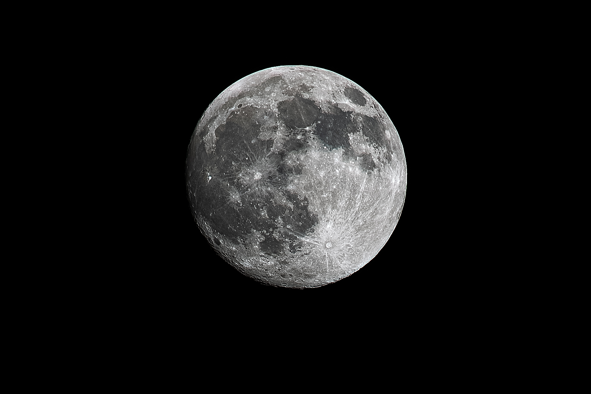
WORK 01 · 月面特写
长焦怼月亮——月海的轮廓、环形山的边缘、第谷溅出来的辐射纹，全在。不用飞三十八万公里，等一个晴夜，把快门按下去就行。「yes, moonth.」
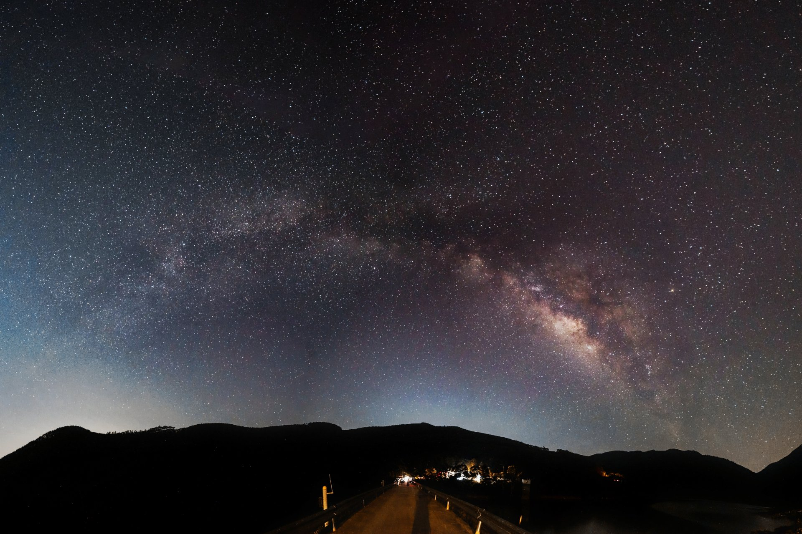
WORK 02 · 银河拱桥
扶绥县东门镇，姑龙水库。银河从两山之间整个拱过来，银心亮得发红，一条乡道直直伸进星场里。拍银河不用去高原，油门踩到位，黑就是最好的滤镜。
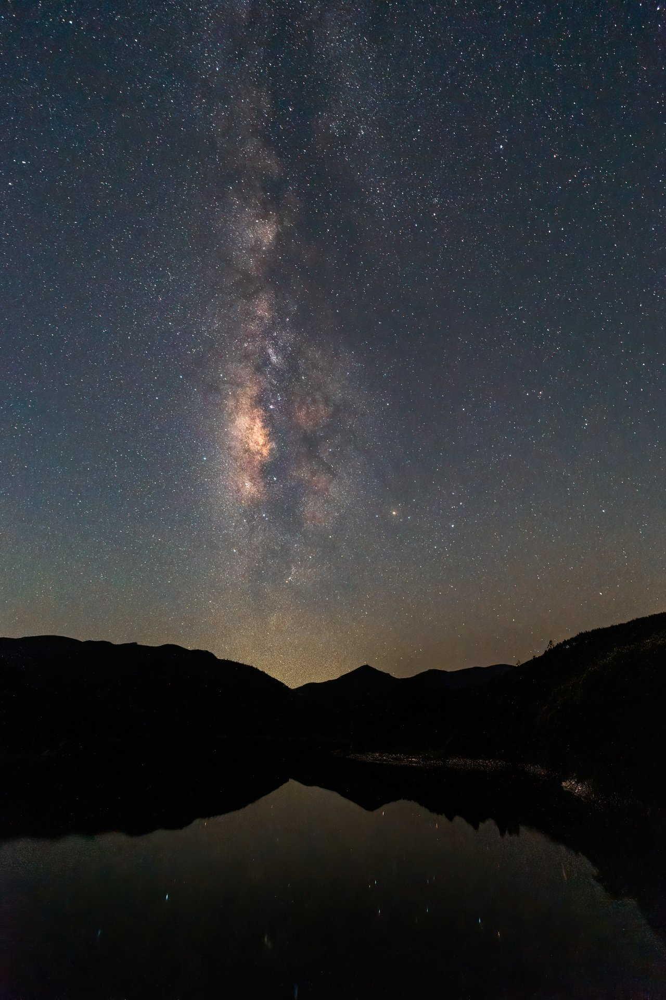
WORK 03 · 银河倒影
同一个水库，换竖构图等银心过顶——银河立在水面上，山是剪影，水把星光又存了一遍。凌晨的水库风停了，整片天都是你的。
WORK 04 · 桂林夜景
桂林叠彩山半山腰，正对木龙湖。山上的灯和湖边的木龙塔一起亮起来，黑瓦古建群被暖光描了边，背后的喀斯特一层层退成蓝。桂林夜景的天花板不在江上，在这一眼里 —— 门票二十五块，别嫌贵，民谚说「登上叠彩山，活到一百三」。
WORK 05 · 日落金山
同一个机位，换一个季节、换一个钟点，夕阳把整片峰林和古建染成蜂蜜色。蓝调是桂林的底妆，金色才是它白昼里的最后一口气 —— 一个机位，两种桂林。
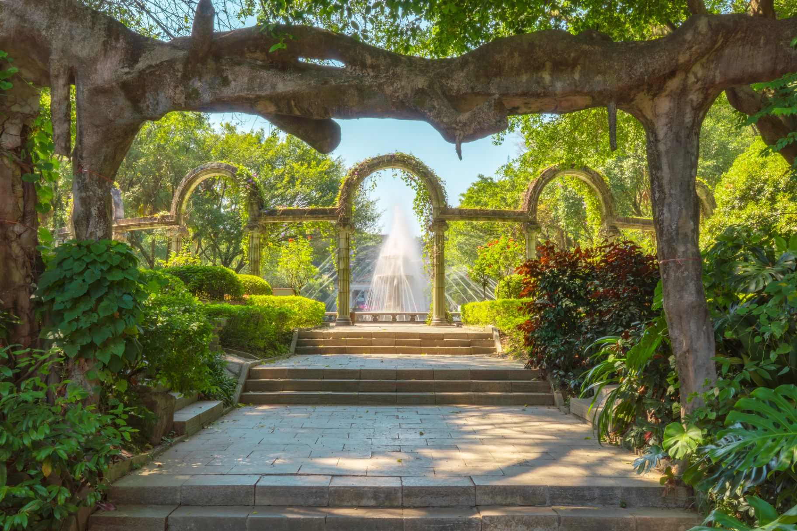
WORK 06 · 欧式园林
桂林城北的虞山公园，北园是欧式园林。老榕树的枝干横过石板路，搭成一道天然拱门；后面一排对称的罗马柱石廊爬满藤蔓，喷泉在正中开着。法式花园长在喀斯特城里，一点都不违和。
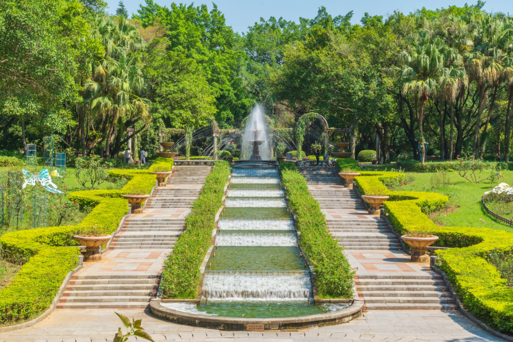
WORK 07 · 欧式园林
北园中轴线上一整条叠水，水从顶层一路跌进池子，两道台阶对称着往下走，棕榈和模纹花坛把绿修得整整齐齐。欧洲园的浪漫，是拿几何一点一点做出来的。
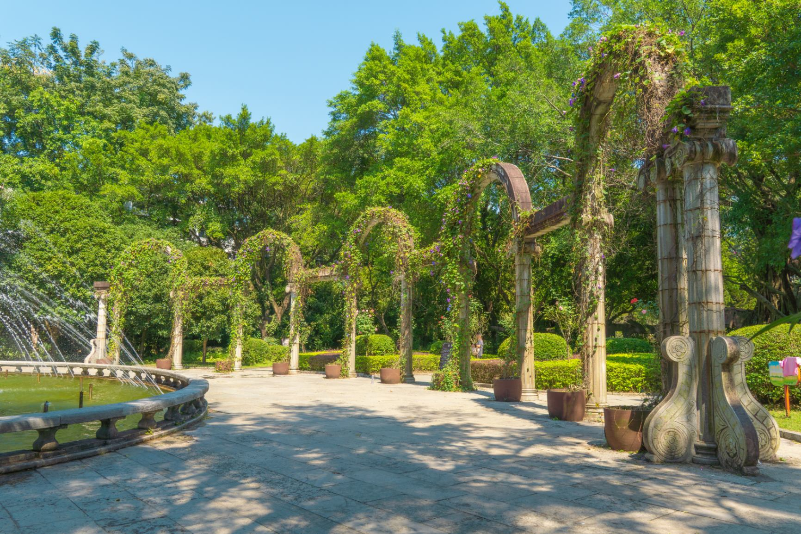
WORK 08 · 欧式园林
一整排石柱拱廊全交给藤蔓管，牵牛顺着柱子一路爬到顶，喷泉的水雾飘过来，太阳一照全是反光。石头负责结构，植物负责表情。
WORK 09 · 桂林山水
桂林老八景「塔山清影」——明代寿佛塔立在塔山之顶，十三米高的七层砖塔挤在六十一平方米的山尖上，吉尼斯认证的「世界最小山顶古塔」。从穿山一带望过去，江湖绕城，峰林一直排到天边，古塔和楼宇同框。
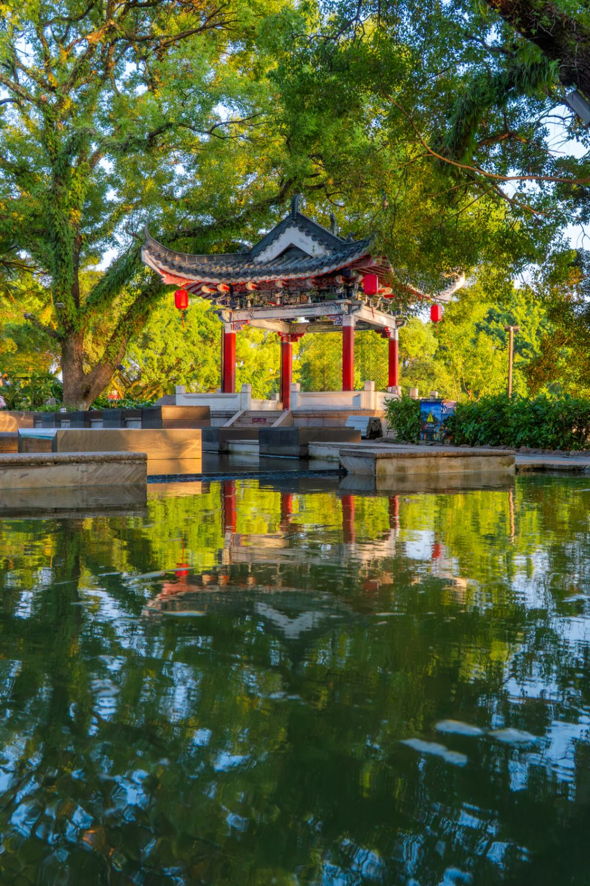
WORK 10 · 桂林水色
榕湖边的亭子，红柱、青瓦、红灯笼，倒在水里被风揉碎。傍晚的光从树叶缝里漏下来，湖面平得像另一块天。
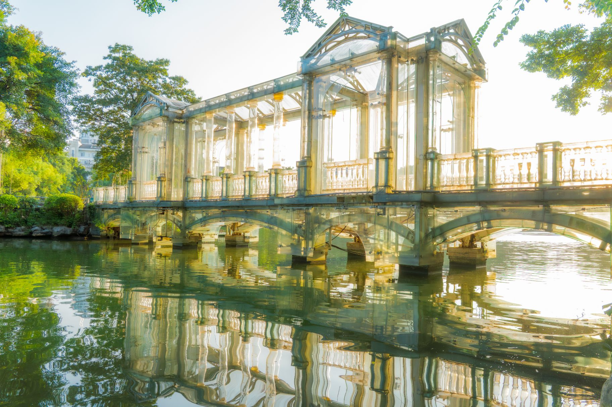
WORK 11 · 桂林水色
榕湖上的水晶玻璃桥，栏杆和桥亭全是玻璃的，太阳一照通体透亮，倒影在水里晃。国内第一座水晶玻璃桥，白天看着像件搁在水面上的玻璃乐器。
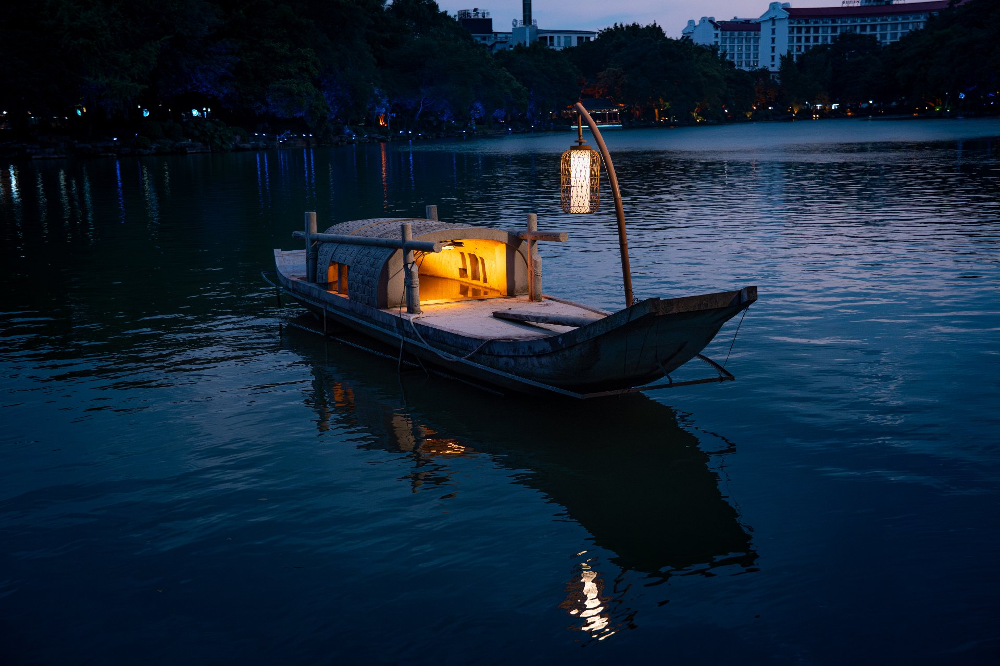
WORK 12 · 桂林夜色
两江四湖的夜游船收了帆停在湖面，一盏提灯挂在船头，暖光落在水里。岸上的城市还在响，湖面已经安静了。
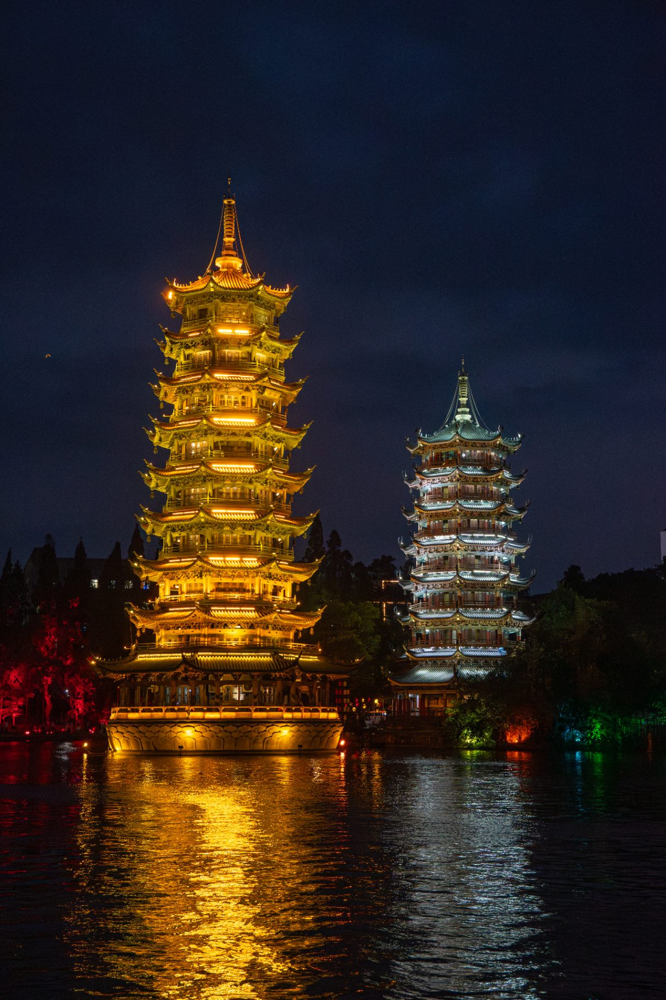
WORK 13 · 桂林夜色
杉湖里的日月双塔——日塔铜造九层，月塔琉璃七层，水下还有十八米把它们连在一起。金的一座银的一座，晚上像浮在湖面的两团火。
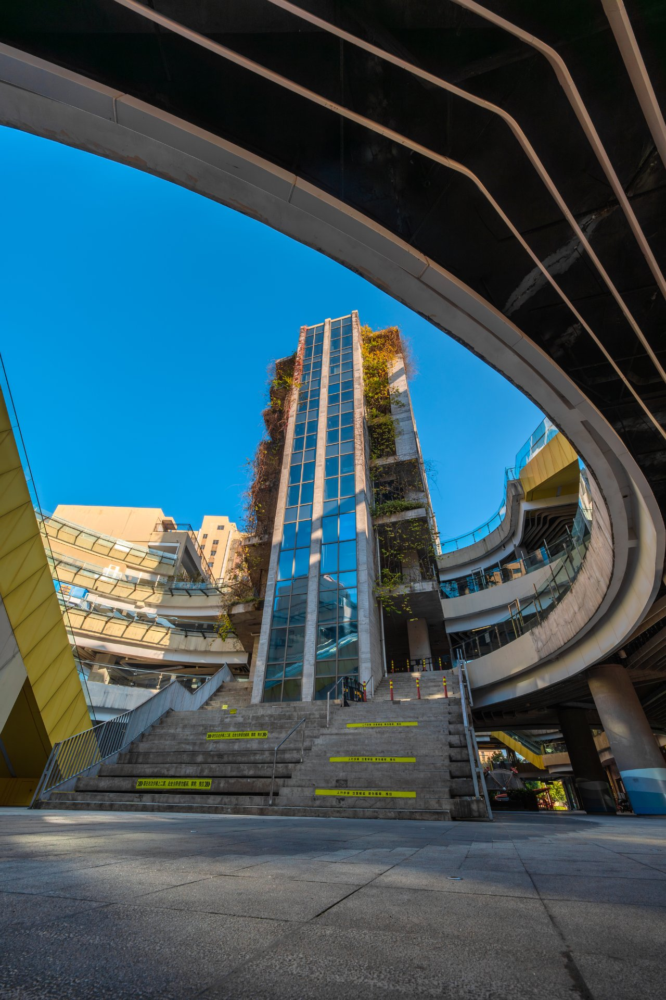
WORK 14 · 建筑几何
桂林叠彩区站前路，离高铁北站八百米。从底层雨棚底下抬头，一整圈弧形清水混凝土把蓝天切成一个开口，中间的玻璃体种满绿植，台阶上贴着黄条。街 Mall 的中央空中花园 + 立体跃层电梯，每层连廊牵着手 —— 不用滤镜，混凝土自己会画图。
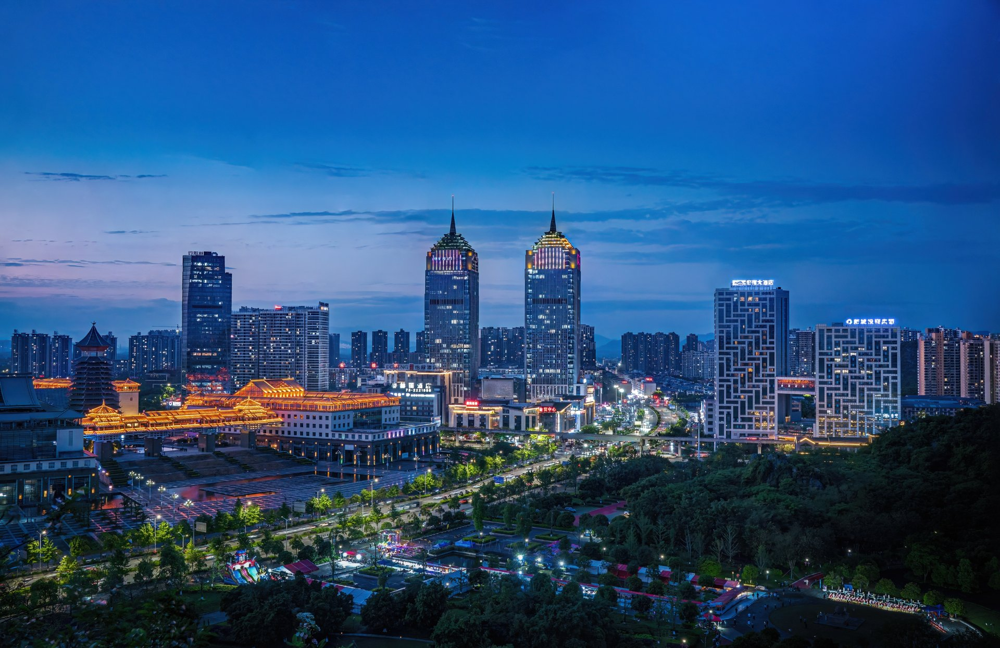
WORK 15 · 城市天际线
桂林往西，临桂新区撑起另一片天。金色古韵的「一院两馆」隔着湖水与摩登双子塔对望，状元桥、大观楼、风雨桥亮成一条暖线，背后还是那片熟悉的喀斯特 —— 老桂林的山水没退场，新城在它上面又长了一层。
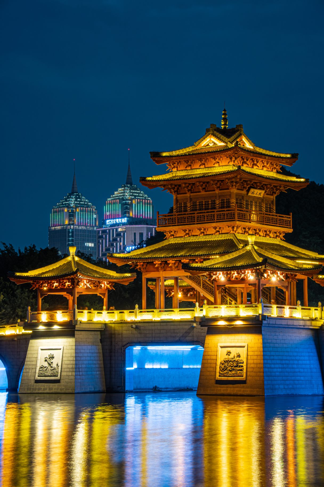
WORK 16 · 桂林夜色
临桂山水公园，九十九米九孔的状元桥横在水上，桥头的状元楼按唐风起翘，灯一亮整座桥像鎏金的；桥孔被染成蓝色，一弯一弯排过去。远处新区的双子塔还亮着——仿古和新城，隔水对望。
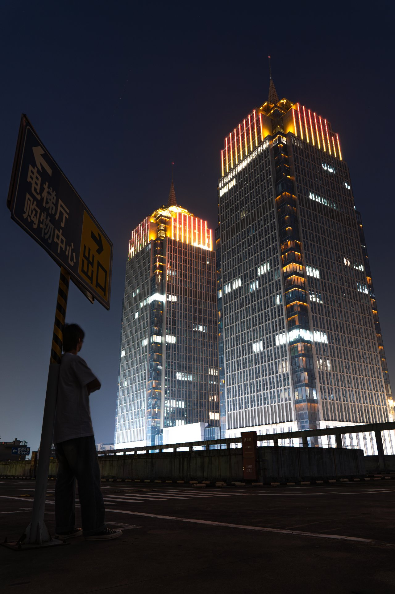
WORK 17 · 城市夜色
新区的双子塔从路口仰上去，塔冠的灯一层层亮成金红，路牌上写着电梯厅和购物中心。站到塔底下看，楼是真的在往上长。
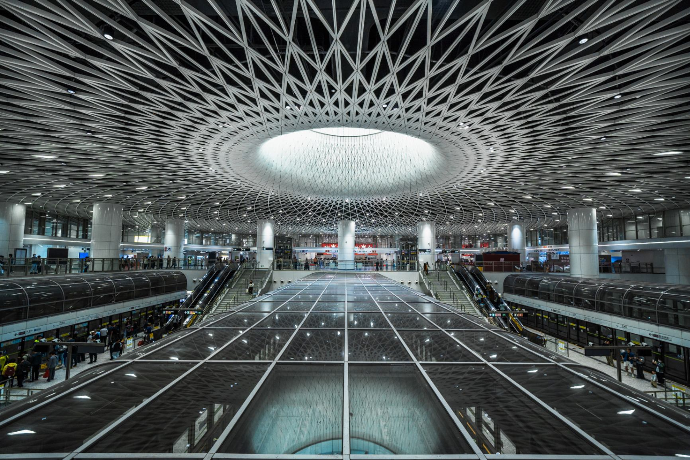
WORK 18 · 室内建筑
地下五线换乘的中庭。抬头，一万两千多个「米字件」按费马螺线织成一张网，正中间一颗直径九米的「天眼」把阳光直直砸到地下；脚下一段全透明玻璃隧道，列车在里面穿行。四十八乘五十一点二米的无柱大跨，一根柱子都不用来撑场面 —— 被叫「深圳之眼」不是没道理。
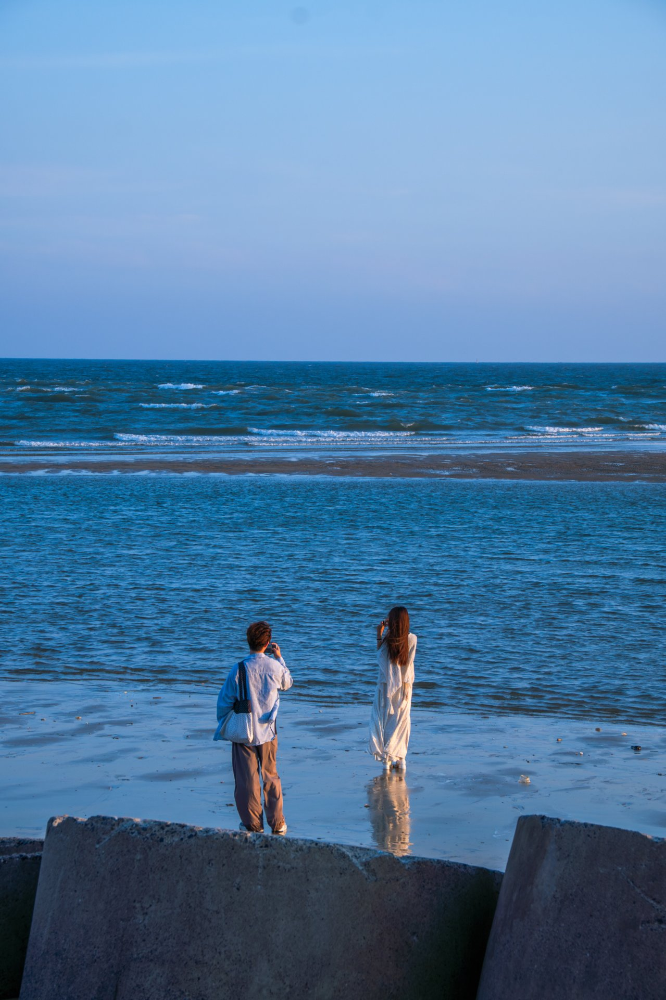
WORK 19 · 海与人
北海银海区海景大道，海神广场前。波塞冬手持三叉戟面朝大海，我们在退潮的滩涂上站着 —— 浪推上来一层白，再退回去，沙面亮得像刚洗过。旁边就是大墩海，潮水带又长又平，弯腰能耙到贝类和小蟹；治「城市病」的成本，一张动车票。
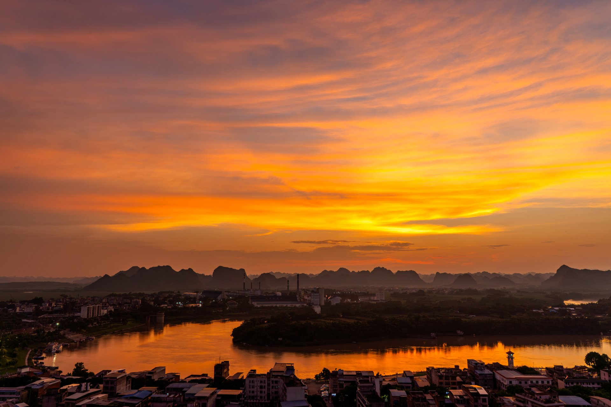
WORK 20 · 江河晚霞
广西崇左扶绥，文化广场边上就是左江。太阳往峰林里一沉，整条江被烧成一条金带，喀斯特一列列排到天边，糖厂的烟囱杵在中间不躲不闪 —— 小城的工业与山水，在霞光里各占一半。徐霞客写过「北有漓江，南有左江」，今天算是对上了。
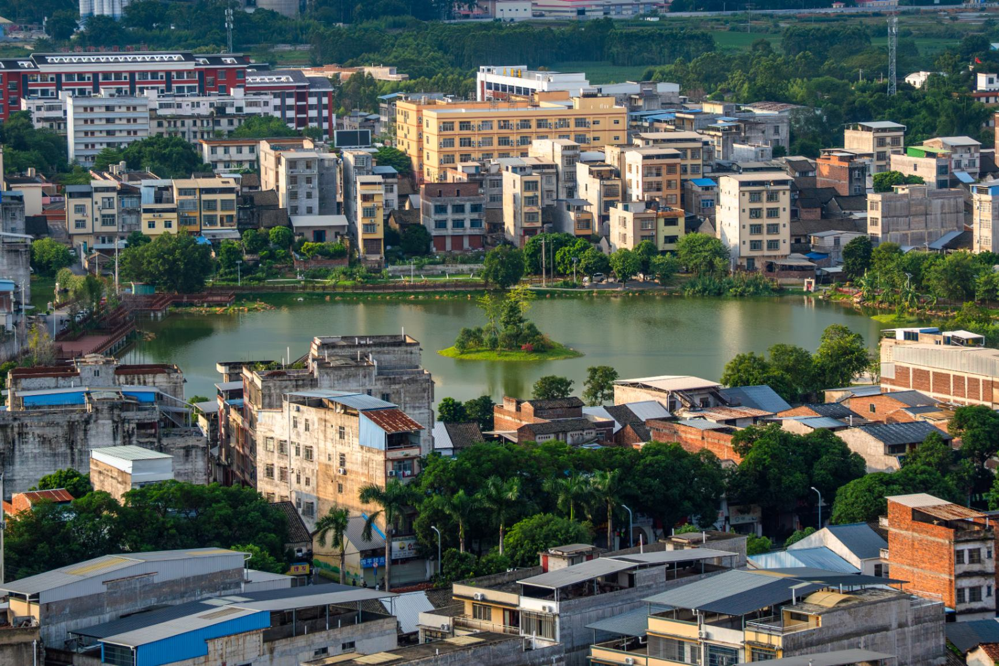
WORK 21 · 小城
扶绥县城的高处看下去，湖心留着一个小岛，学校和民房一层层围着水排开。小城不大，绿得奢侈。
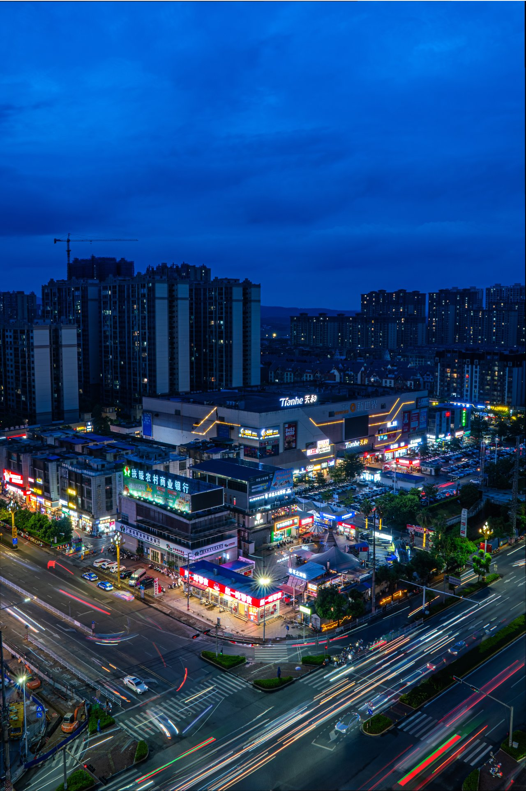
WORK 22 · 小城
县城的十字路口，长曝光把车灯拉成红黄两股，农商行的招牌亮着。小城的夜不吵，但一直亮着。
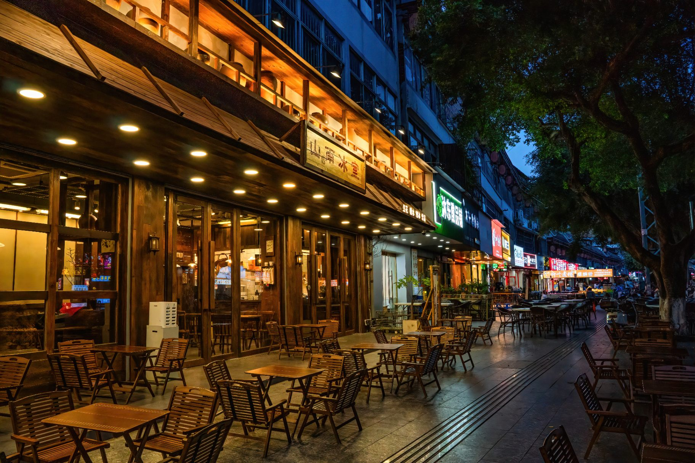
WORK 23 · 小城
县城的老街入夜才醒——「山海冰室」的木招牌亮着，一排排藤椅摆到人行道上，橙光把半条街染成暖色。冰室、糖水、夜风，小城的夜从这里开始。
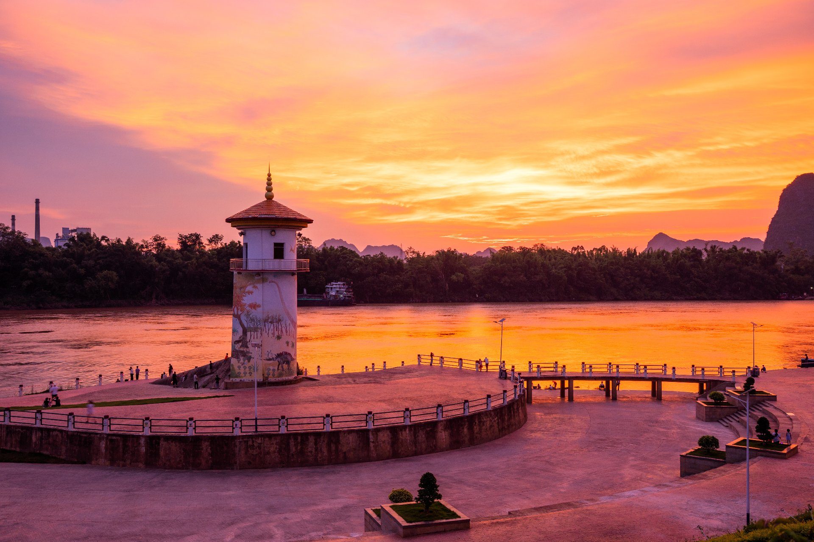
WORK 24 · 江河晚霞
文化广场旁的左江灯塔，塔身画着恐龙——扶绥可是「恐龙之乡」。晚霞烧到最旺的时候，整条江和广场全泡在橘色里，塔是画面里唯一的白。
一套为「什么都想拍」配的轻量组合 —— 机身负责快和稳，镜头负责全焦段 F2.8 恒定；从扫街到银河，全靠它。
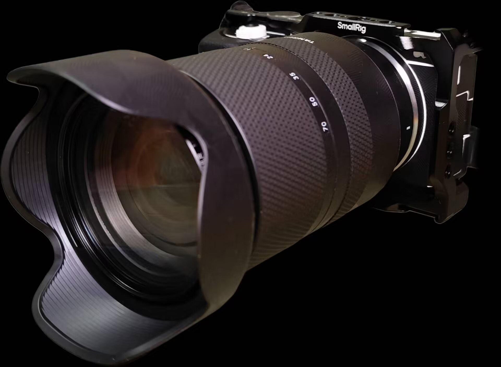
日常挂机形态 · SONY ZV-E10 ＋ TAMRON 17-70mm F/2.8 Di III-A VC RXD ＋ SmallRig 兔笼 · 花瓣遮光罩
机身 · BODY
一台为内容创作而生的 Vlog 微单：2420 万像素 APS-C 大底，侧翻屏加三胶囊麦克风，机身只重 343 克——快和稳，它都管。
镜头 · LENS
世界首支 17mm 起步的 APS-C 大光圈标准变焦（型号 B070）——一镜走天下：广角扫街、长焦特写、贴脸近摄，全程 F2.8 恒定。